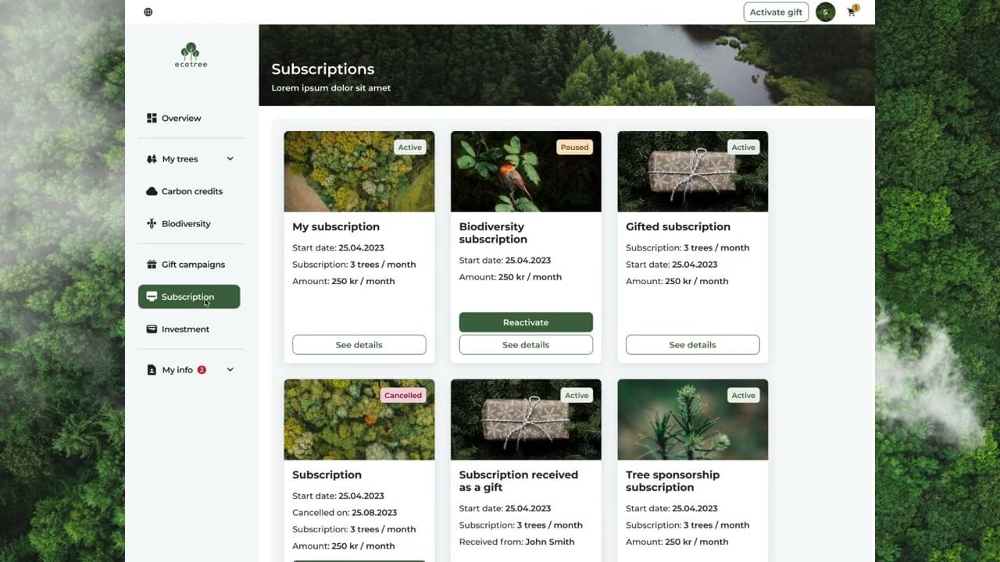
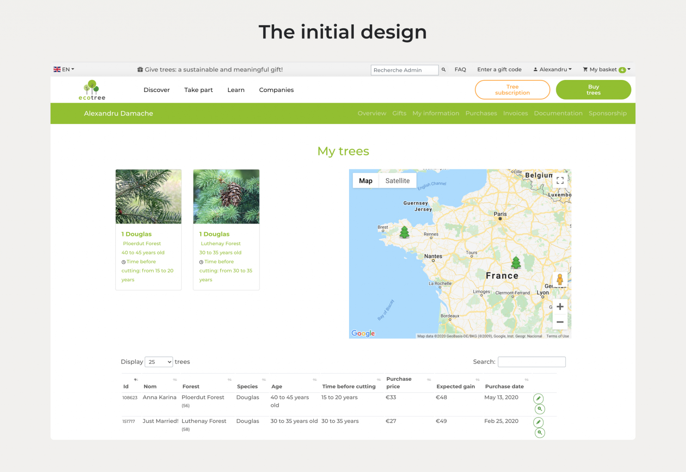
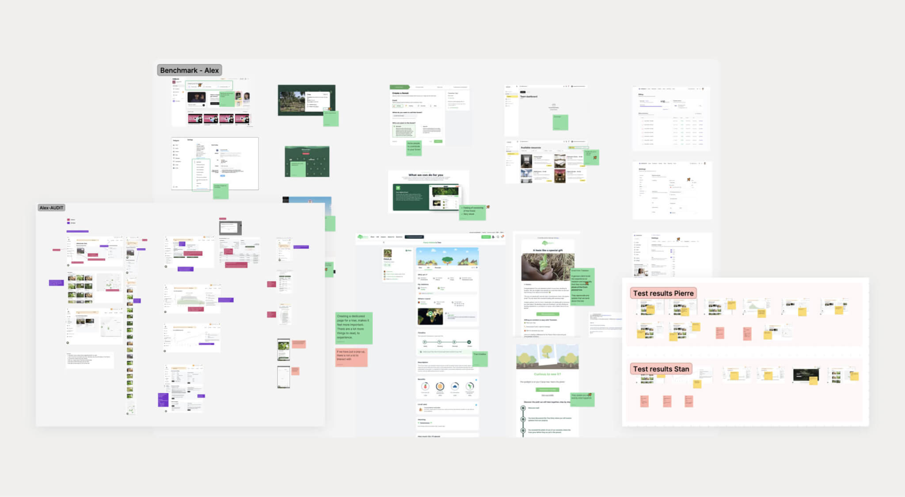
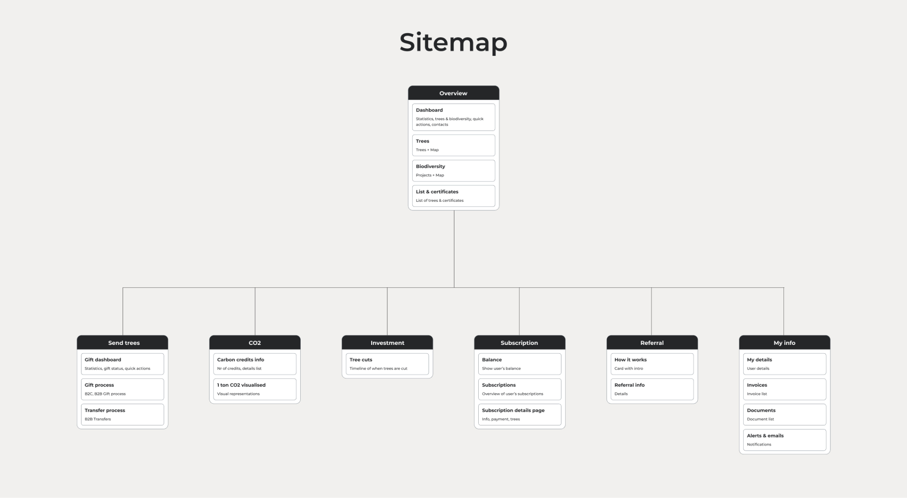
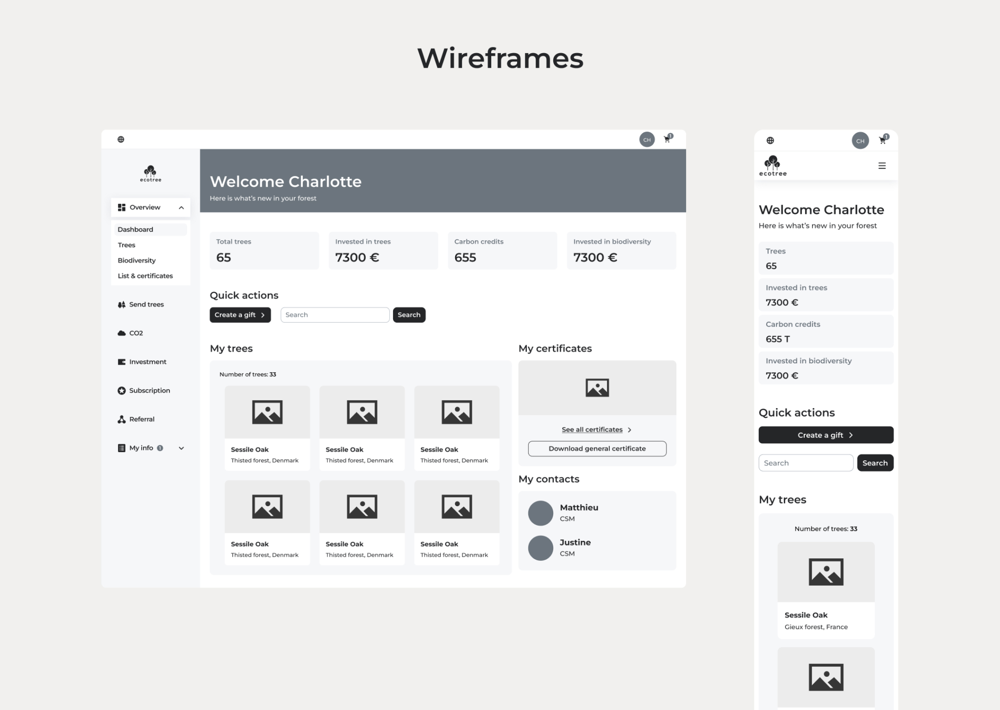
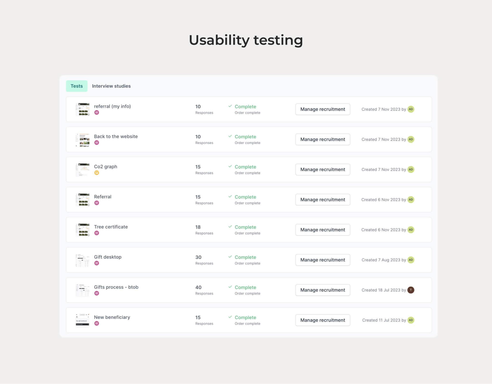
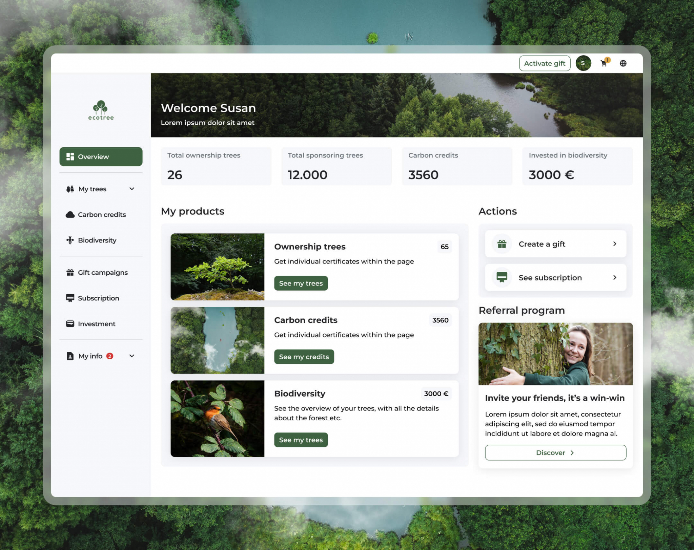
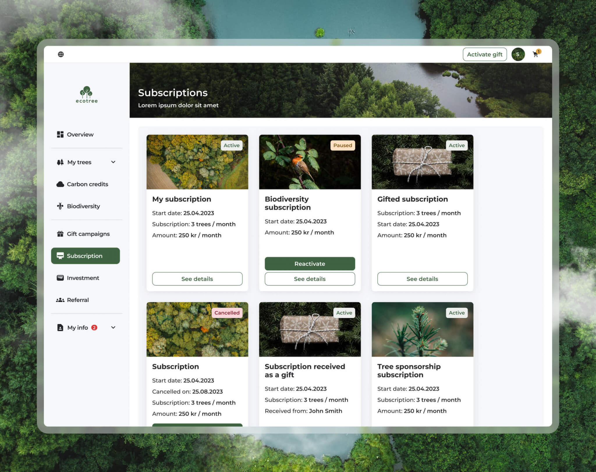
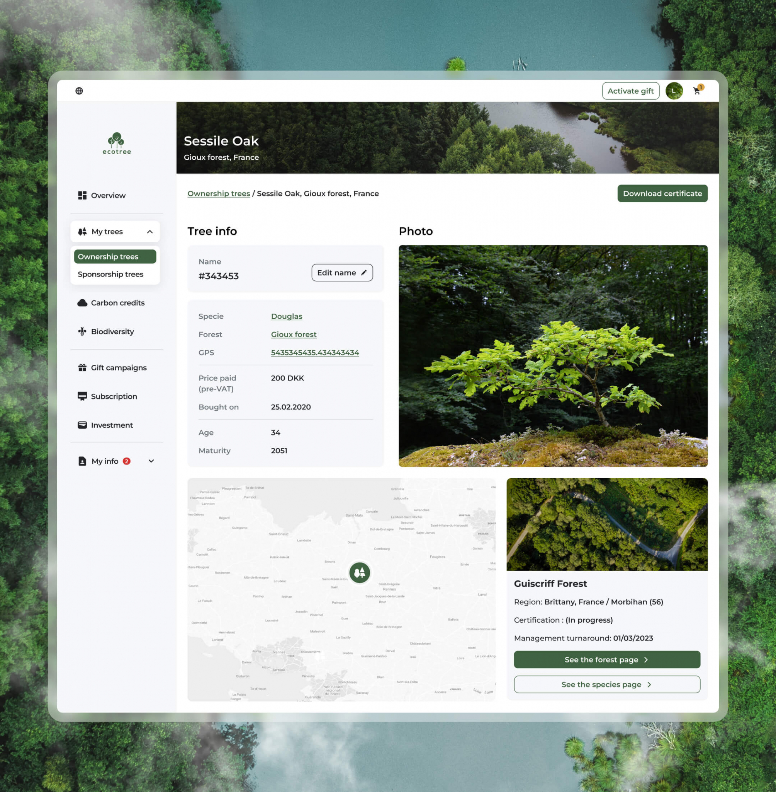
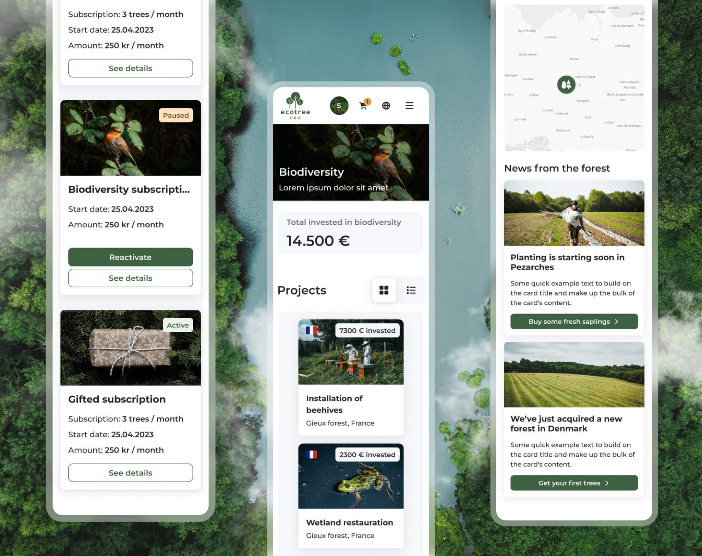

A full redesign of the account section — the most visited page in the product. Tens of thousands of customers use it to manage their trees, track projects, and access certificates.

Impact
Company
EcoTree International
My role
Head of Design — led direction end to end
Team
+ 1 Senior Designer, 1 UX Intern
The dashboard was EcoTree's most important page and also its most outdated. Customers use it to track their trees, manage subscriptions, follow biodiversity projects, and download certificates. The old version made all of that harder than it needed to be.

The old dashboard — table-heavy, no visual hierarchy, and certificates buried deep.
Before touching Figma, we ran a full research phase. Stakeholder interviews, competitor benchmarking, a UX audit of the existing platform, and user interviews to understand what customers actually needed.
The signal was consistent: people wanted richer detail about their trees and projects, and they wanted certificates to be one click away. We also used Mouseflow session data and CSM feedback to understand where users were dropping off.

Benchmark analysis and UX audit — documented every inconsistency and dead end in the old platform.
We followed the Double Diamond — discover, define, develop, deliver. The sitemap came first, because fixing the navigation structure mattered more than any visual improvement.
Reorganised the full information architecture based on research. Fewer redundant paths, clearer sections, certificates surfaced at the top level.
Validated the structure with real users before building anything. Made sure the categories matched how customers actually think about their account.
Multiple rounds of prototype tests — 8+ tests across referral, certificates, CO2 graph, gift flows, and more. Iterated until users could complete tasks without guidance.
Final designs used EcoTree's component library throughout. The dashboard finally felt like part of the same product as the rest of the site — and the dev team could move faster because of it.

The new sitemap — direct paths to every section, certificates no longer buried.

Early wireframes used for the first round of prototype testing.

8+ usability tests run across the project. Real users, real tasks, real data.
The final dashboard gives customers a clear view of everything they own. Trees, biodiversity projects, subscriptions, and certificates — all one click away. The visual language is fully aligned with the design system, which also made the handoff to development significantly smoother.

Tree overview — customers can now see rich detail about every tree they own, including species, forest, and maturity date.

Subscriptions — all plans in one place, status at a glance.

Tree detail — GPS location, forest info, certificate download front and center.

Mobile — designed for all screen sizes from the start, not retrofitted after.